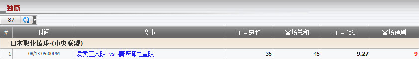

独赢
定义:
显示基于注单占成数的总代理输赢, 投注类型之: 独赢。.

图 1.1
用词注解
- 主队总和: 总代理从会员投注额基于占成的所得总额, 如果选择主队投注。
- 客队总和: 总代理从会员投注额基于占成的所得总额, 如果选择客队投注。
- 主队预测: 总代理可能会输的数额, 若会员赢得他们所选择的投注 (主队)。
- 客队预测: 总代理可能会输的数额, 若会员赢得他们所选择的投注 (客队)。
从上图中, 我们得到以下的投注信息:
- 第一投注: 投注额 = 120, 赔率 = 0.43, 选择 = 主队 (读卖巨人队), 总代理占成 = 30%
--> 主场总和 = 投注额 * 总代理占成 * 1 = 120 * 30% * 1 = 36
--> 客场总和 = 0
--> 主场预测 = 投注额 * 总代理占成 * 赔率 = 120 * 30% * 0.43 = 15.48
--> 客场预测 = -投注额 * 总代理占成 = -120 * 30% = -36
- 第二投注: 投注额 = 150, 赔率 = -0.55, 选择 = 客队 (横滨湾之星队), 总代理占成 = 30%
--> 主场总和 = 0
--> 客场总和 = 投注额 * 总代理占成 * 1 = 150 * 30% * 1 = 45
--> 主场预测 = 投注额 * 总代理占成 * 赔率 = 150 * 30% * (-0.55) = -24.75
--> 客场预测 = 投注额 * 总代理占成 * 1 = 150 * 30% * 1 = 45
根据以上两个投注, 我们得到最后的结果, 如下:
--> 主场总和 = 36 + 0 = 36
--> 客场总和 = 0 + 45 = 45
--> 主场预测 = 15.48 - 24.75 = -9.27
--> 客场预测 = -36 + 45 = 9
注:
- 主场总和
- 如果会员投注主队, 那么:
+ 若赔率绝对值 < 1 那么: 主场总和 = 投注额 * 总代理占成 * 1。
+ 若赔率绝对值 >= 1 那么: 主场总和 = 投注额 * 总代理占成 * |赔率|。
- 如果会员投注客队, 那么: 主场总和 = 0。
- 客队总和
- 如果会员投注主队, 那么: 客队总和 = 0。
- 如果会员投注客队, 那么:
+ 若赔率绝对值 < 1 那么: 客队总和 = 投注额 * 总代理占成 * 1。
+ 若赔率绝对值 >= 1 那么: 客队总和 = 投注额 * 总代理占成 * |赔率|。
- 主场预测
- 若 赔率 < 0
+ 如果会员投注主队, 那么: 主场预测 = 投注额 * 总代理占成 * 1。
+ 如果会员投注客队, 那么: 主场预测 = 投注额 * 总代理占成 * 赔率。
- 若 赔率 > 0
+ 如果会员投注主队, 那么: 主场预测 = 投注额金 * 总代理占成 * 赔率。
+ 如果会员投注客队, 那么: 主场预测 = -投注额 * 总代理占成。
- 客场预测
- 若 赔率 < 0
+ 如果会员投注主队, 那么: 客场预测 = 投注额 * 总代理占成 * 赔率。
+ 如果会员投注客队, 那么: 客场预测 = 投注额 * 总代理占成 * 1。
- 若 赔率 > 0
+ 如果会员投注主队, 那么: 客场预测 = -投注額 * 总代理占成。
+ 如果会员投注客队, 那么: 客场预测 = 投注額 * 总代理占成 * 赔率。